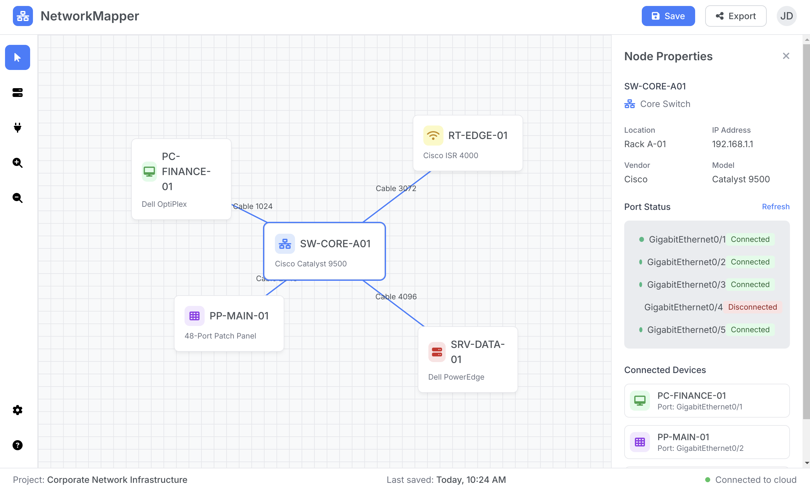

██████╗ ██╗ ██████╗ ██╗ ███████╗██╗ ██╗██████╗ ██╗ ██████╗ ██████╗ ███████╗██████╗
██╔════╝ ██║ ██╔══██╗██║ ██╔════╝╚██╗██╔╝██╔══██╗██║ ██╔═══██╗██╔══██╗██╔════╝██╔══██╗
██║ ███╗██║ ██████╔╝██║ █████╗ ╚███╔╝ ██████╔╝██║ ██║ ██║██████╔╝█████╗ ██████╔╝
██║ ██║██║ ██╔═══╝ ██║ ██╔══╝ ██╔██╗ ██╔═══╝ ██║ ██║ ██║██╔══██╗██╔══╝ ██╔══██╗
╚██████╔╝███████╗██║ ██║ ███████╗██╔╝ ██╗██║ ███████╗╚██████╔╝██║ ██║███████╗██║ ██║
╚═════╝ ╚══════╝╚═╝ ╚═╝ ╚══════╝╚═╝ ╚═╝╚═╝ ╚══════╝ ╚═════╝ ╚═╝ ╚═╝╚══════╝╚═╝ ╚═╝
GLPI Explorer résout le problème de lenteur des requêtes dans les grands inventaires GLPI en introduisant un cache intelligent local qui agit comme un double numérique de votre infrastructure. Cette approche transforme GLPI d'un simple outil d'inventaire statique en une plateforme dynamique pour explorer et comprendre votre infrastructure réseau.
(glpi-explorer)> ls pc
╭─────────────────────╮
│ Liste des Computer │
│ ID │ Nom │ Statut │
│ ────┼─────┼──────── │
│ 4 │ PC3 │ 0 │
│ 6 │ PC4 │ 1 │
│ 7 │ PC1 │ 1 │
│ 8 │ PC2 │ 1 │
╰─────────────────────╯
(glpi-explorer)> get pc pc1
Détails de PC1
┏━━━━━━━┳━━━━━━━━┳━━━━━━━━━━━━━━━━┳━━━━━━━━━━━━━┳━━━━━━━━━━━━━━━━━━━━━━━┳━━━━━━━━━━━━━━━━━━━━┳━━━━━━━━━━━━━━━━━┳━━━━━━━━━━━━━━━━━━━━━━━━━┓
┃ ID ┃ Nom ┃ Type ┃ Statut ┃ Localisation ┃ Nom du Port ┃ Vitesse ┃ Adresse MAC ┃
┡━━━━━━━╇━━━━━━━━╇━━━━━━━━━━━━━━━━╇━━━━━━━━━━━━━╇━━━━━━━━━━━━━━━━━━━━━━━╇━━━━━━━━━━━━━━━━━━━━╇━━━━━━━━━━━━━━━━━╇━━━━━━━━━━━━━━━━━━━━━━━━━┩
│ 7 │ PC1 │ Computer │ 1 │ room machine │ NW rear port PC1 │ 1000 Mbps │ 8d:6a:5f:6d:39:0c │
└───────┴────────┴────────────────┴─────────────┴───────────────────────┴────────────────────┴─────────────────┴─────────────────────────┘
(glpi-explorer)> tr pc pc1
Trace depuis PC1
┏━━━━━━━━┳━━━━━━━━━━━━━━━━┳━━━━━━━━━━━━━━━━━━┳━━━━━━━━━━━━━━━━━━━━━━━━━━━━━━━━━━━━━━━━━━━━━━━━━━━━━━━━━━┳━━━━━━━━━━━━━━━━━━━━━━━━━━━━━━━━━━┓
┃ Étape ┃ Localisation ┃ Équipement ┃ Port ┃ Via ┃
┡━━━━━━━━╇━━━━━━━━━━━━━━━━╇━━━━━━━━━━━━━━━━━━╇━━━━━━━━━━━━━━━━━━━━━━━━━━━━━━━━━━━━━━━━━━━━━━━━━━━━━━━━━━╇━━━━━━━━━━━━━━━━━━━━━━━━━━━━━━━━━━┩
│ 1 │ room machine │ PC1 │ rear port PC1 │ C-PC1 -> HB ethernet │
├────────┼────────────────┼──────────────────┼──────────────────────────────────────────────────────────┼──────────────────────────────────┤
│ 2 │ room machine │ HB ethernet │ HB ethernet port 0 IN -> HB ethernet port 5 OUT │ (Interne) │
├────────┼────────────────┼──────────────────┼──────────────────────────────────────────────────────────┼──────────────────────────────────┤
│ 3 │ room machine │ HB ethernet │ HB ethernet port 5 OUT │ C-HB ethernet -> WO machine room │
├────────┼────────────────┼──────────────────┼──────────────────────────────────────────────────────────┼──────────────────────────────────┤
│ 4 │ room machine │ WO machine room │ WO machine room port 0 IN -> WO machine room port 0 OUT │ (Interne) │
├────────┼────────────────┼──────────────────┼──────────────────────────────────────────────────────────┼──────────────────────────────────┤
│ 5 │ room machine │ WO machine room │ WO machine room port 0 OUT │ C-WO port 1 -> PP 1 │
├────────┼────────────────┼──────────────────┼──────────────────────────────────────────────────────────┼──────────────────────────────────┤
│ 6 │ data center │ PP 1 │ PP 1 port 01 IN -> PP 1 port 01 OUT │ (Interne) │
├────────┼────────────────┼──────────────────┼──────────────────────────────────────────────────────────┼──────────────────────────────────┤
│ 7 │ data center │ PP 1 │ PP 1 port 01 OUT │ C-PP port 1 -> SW reseaux │
├────────┼────────────────┼──────────────────┼──────────────────────────────────────────────────────────┼──────────────────────────────────┤
│ 8 │ data center │ SW reseaux │ SW reseaux port 0 │ C-PP port 1 -> PP 1 │
└────────┴────────────────┴──────────────────┴──────────────────────────────────────────────────────────┴──────────────────────────────────┘
(glpi-explorer)|Δ1> changes
Changements Détectés
┏━━━━━━━━━━━━━━━━━━━━━━━━━┳━━━━━━━━━━━━━━━━━━┳━━━━━━━┳━━━━━━━━━┳━━━━━━━━━━━━━━━━━━━━━━━━━━━━━━━━━━━━━┳━━━━━━━━━━━━━━━━━━━━━━━━━━━━━━━━━━━━━┓
┃ Action ┃ Type ┃ ID ┃ Nom ┃ Date Modif. (GLPI) ┃ Détails de la Modification ┃
┡━━━━━━━━━━━━━━━━━━━━━━━━━╇━━━━━━━━━━━━━━━━━━╇━━━━━━━╇━━━━━━━━━╇━━━━━━━━━━━━━━━━━━━━━━━━━━━━━━━━━━━━━╇━━━━━━━━━━━━━━━━━━━━━━━━━━━━━━━━━━━━━┩
│ MODIFICATION │ Computer │ 4 │ PC3 │ 2025-08-04 12:16:55 │ states_id: 0 -> 1 │
└─────────────────────────┴──────────────────┴───────┴─────────┴─────────────────────────────────────┴─────────────────────────────────────┘
╭───────────────────────────────────────────────────────────────────── Nettoyage ──────────────────────────────────────────────────────────╮
│ Journal des changements effacé. │
╰──────────────────────────────────────────────────────────────────────────────────────────────────────────────────────────────────────────╯
Sur des parcs de grande taille (+10 000 objets), le chargement initial du cache est trop long, ce qui impacte l'ergonomie. Notre priorité est l'optimisation.
